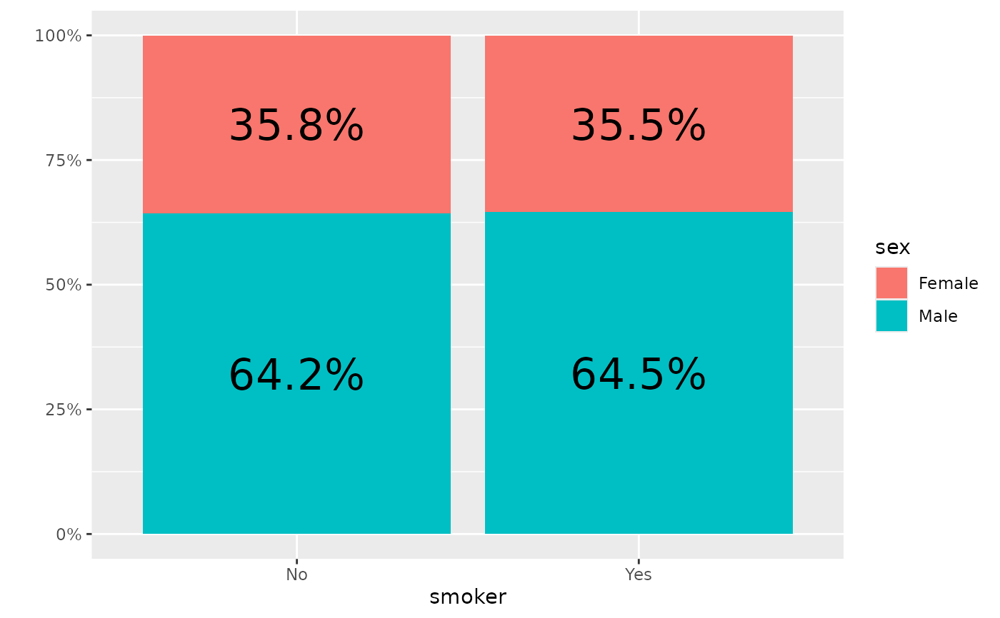
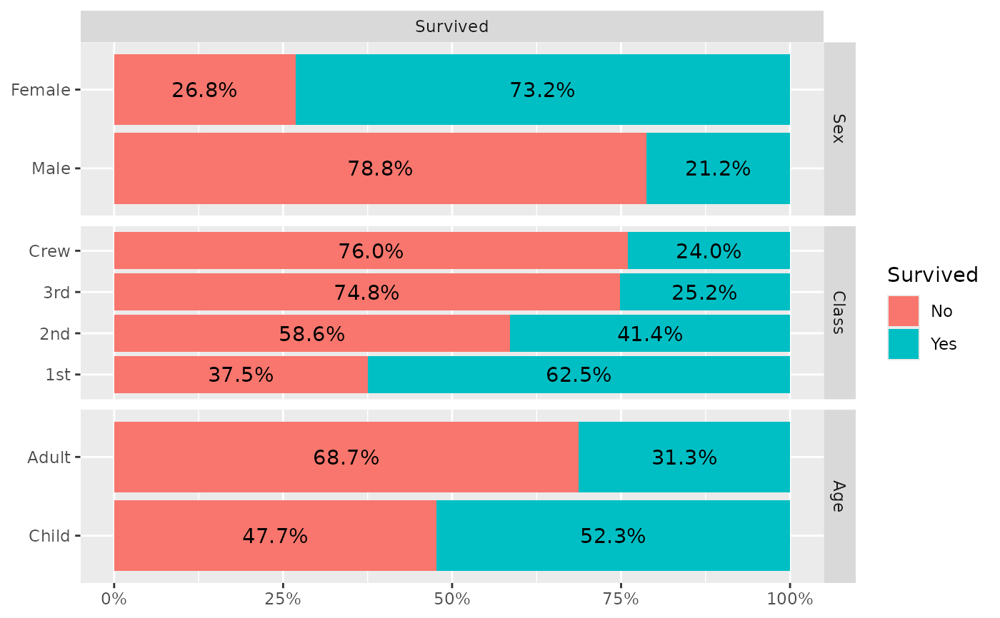

Plot column or row percentage using bar plots.
ggally_colbar(
data,
mapping,
label_format = scales::label_percent(accuracy = 0.1),
...,
remove_background = FALSE,
remove_percentage_axis = FALSE,
reverse_fill_levels = FALSE,
geom_bar_args = NULL
)
ggally_rowbar(
data,
mapping,
label_format = scales::label_percent(accuracy = 0.1),
...,
remove_background = FALSE,
remove_percentage_axis = FALSE,
reverse_fill_levels = TRUE,
geom_bar_args = NULL
)data set using
aesthetics being used
formatter function for displaying proportions, not taken into account if a label aesthetic is provided in mapping
other arguments passed to geom_text(...)
should the panel.background be removed?
should percentage axis be removed? Removes the y-axis for ggally_colbar() and x-axis for ggally_rowbar()
should the levels of the fill variable be reversed?
other arguments passed to geom_bar(...)
# Small function to display plots only if it's interactive
p_ <- GGally::print_if_interactive
data(tips)
p_(ggally_colbar(tips, mapping = aes(x = smoker, y = sex)))
p_(ggally_rowbar(tips, mapping = aes(x = smoker, y = sex)))
# change labels' size
p_(ggally_colbar(tips, mapping = aes(x = smoker, y = sex), size = 8))

# change labels' colour and use bold
p_(ggally_colbar(tips,
mapping = aes(x = smoker, y = sex),
colour = "white", fontface = "bold"
))
# display number of observations instead of proportions
p_(ggally_colbar(tips, mapping = aes(x = smoker, y = sex, label = after_stat(count))))
# custom bar width
p_(ggally_colbar(tips, mapping = aes(x = smoker, y = sex), geom_bar_args = list(width = .5)))
# change format of labels
p_(ggally_colbar(tips,
mapping = aes(x = smoker, y = sex),
label_format = scales::label_percent(accuracy = .01, decimal.mark = ",")
))
p_(ggduo(
data = as.data.frame(Titanic),
mapping = aes(weight = Freq),
columnsX = "Survived",
columnsY = c("Sex", "Class", "Age"),
types = list(discrete = "rowbar"),
legend = 1
))
